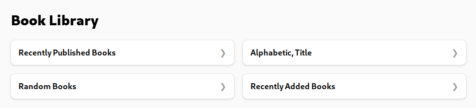
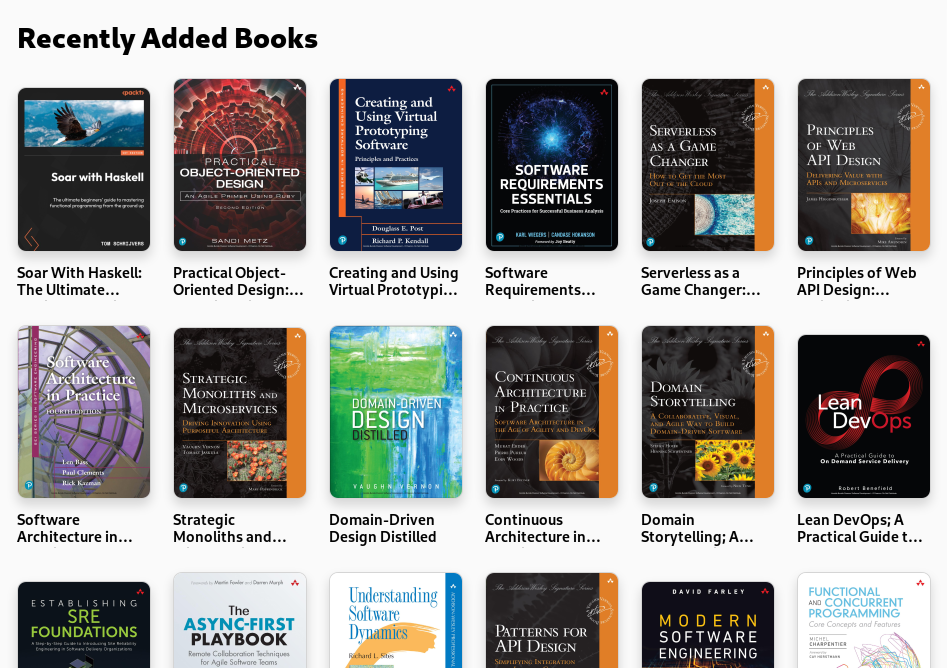

OPDS
Overview
OPDS is a standard for distributing media, specifically ebooks. books has OPDS support and
offers the following catalogs for navigation and acquisition:
- Alphabetic, Title: books by title
- Random Books: random selection of books
- Recently Added Books: books by added date
- Recently Published Books: orders books by publication date
- The view for an individual book allows downloading books in all the registerd formats
Usage
OPDS support is automatically enabled. The OPDS root feed is available under <server:port>/opds/. The trailing
slash is required.
Screenshots
With Foliate, root catalog:

